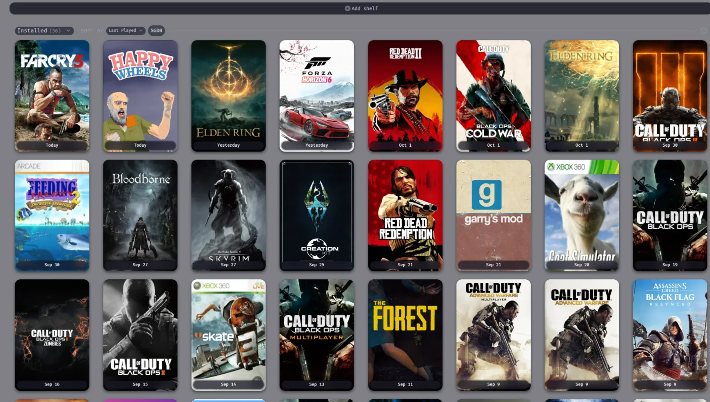
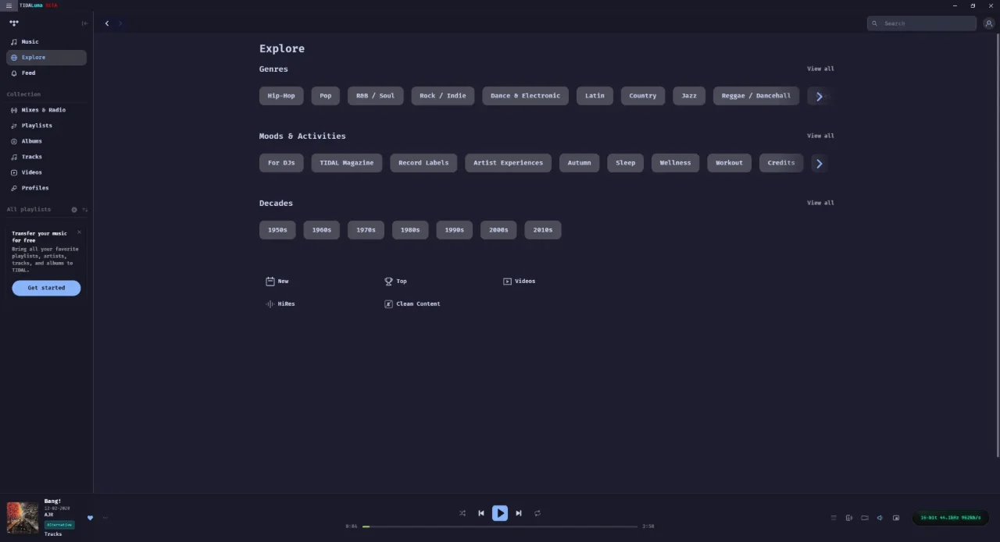

Catppuccin Mocha app themes
Discord, Steam, TIDAL and T3 Code in one palette: frosted panels, blue and mauve accents, FiraCode. Free on GitHub.
Four themes for four apps you leave open all day.
MochaCord is built on Midnight for the TestCord client mod, and it runs on Vencord and Equicord too. One CSS file, version 3.1.75.
Needs TestCord, Vencord or Equicord.
MochaSteam gives Steam rounded controls, frosted dropdowns and blue and lavender accents, with native acrylic on Windows 11. A fork of SpaceTheme by SpaceEnergy, version 1.6.0.
Needs Millennium.
MochaTidal puts solid Mocha surfaces, a frosted player bar and a mauve progress bar on the TIDAL desktop app. Tested on TIDAL 2.43.2 with TidaLuna 1.17.1-beta.
Needs TidaLuna and its Themer plugin.
T3 Code Enhanced themes T3 Code on Windows and patches it: frosted menus, hover frames, the Windows 11 backdrop. It checks GitHub for its own updates.
Windows only. Version 2.0.0, with a SHA-256 file.




Install with one paste or one folder. Each app loads its theme a different way.
MochaCord
In TestCord, Vencord or Equicord, add the link to Online Themes. It follows every update.
Settings › Themes › Online Themes
raw.githubusercontent.com/DavidHiFi/MochaCord-Theme/main/MochaCord.css MochaSteam
Add MochaSteam to Millennium, choose it under Themes and restart Steam.
Steam › Millennium › Themes ›MochaSteam 1.6.0MochaTidal
Open TidaLuna's Themer and paste the whole CSS file from the repository.
TIDAL › ThemerCtrl+E› pasteMochaTidal.css
T3 Code Enhanced
Unzip the release and run the installer. The updater takes it from there.
T3-Code-Enhanced-v2.0.0.zip › install.cmd
The Catppuccin Mocha palette, in every app
All four use Catppuccin Mocha: the same base, the same text colour and the same blue for buttons, so switching from Discord to TIDAL changes the app and leaves the colours where they were.
- base
- mantle
- text
- blue
- mauve
- green

Do the themes cost anything?
No. All four are free on GitHub. Ko-fi is there if you want to chip in.
Does MochaCord work on the stock Discord app?
No. It needs a client mod: TestCord, Vencord or Equicord.
Do the themes work on macOS or Linux?
T3 Code Enhanced is Windows only. The others are CSS, tested on Windows.
How do MochaSteam and MochaTidal update?
Download the new release. MochaCord and T3 Code Enhanced update themselves.
Which TIDAL version is MochaTidal tested on?
TIDAL 2.43.2 with TidaLuna 1.17.1-beta. Each repository README has the rest.